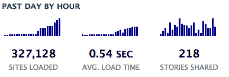

So Google Reader is shutting down. This is obviously worrisome, mostly because the deprecation schedule is tight. But this is also a great news because Google Reader stopped innovating 5 years ago and yet was still the most visible RSS reader out there.
When people said RSS was dead, a lot of them were just expressing the fact that Google Reader was a zombie.
Believe it or not, we had this post in the pipes for a couple weeks. The initial reason for it was to get an exhaustive overview of the many readers out there to convince them they should use SubToMe, but this deserves another post.
There are actually a ton of readers and I’ll focus on the web ones, because the web is my thing.
UPDATE There is indeed a LOT of readers and I’ve been contacted by many people to add theres. Please, make sure you read the comments too as they include a bunch of other suggestions
Msgboy
 First, I’d like to point Google Chrome users toward Msgboy which is our own in-house attempt.
It’s obviously plugged to Superfeedr (realtime FTW), and will only store your data in your browser.
First, I’d like to point Google Chrome users toward Msgboy which is our own in-house attempt.
It’s obviously plugged to Superfeedr (realtime FTW), and will only store your data in your browser.
It’s also completely open source and you can import your data from Google Reader :)
We hope to have a Firefox version very soon. Feel free to get in touch if you think you can help :)
Google Reader and the Google Reader based services
By all counts Google reader is/was the most popular RSS Reader out there. What’s even more interesting is that many other services, like Feedly relied on its API. It’s worth mentionning Reeder too. These services will have to find an alternative to Reader’s API, Superfeedr can help =)
The alternatives
In the past couple weeks, we have seen dozens of new initiatives in this area. Let’s do a quick summary.
Bloglovin
Bloglovin is probably the only popular reader outside of the tech crowd. It’s UI is probably closer to the Tumblr dashboard and the popular tabs tells more about its userbase than anything else: fashion, scrapping, food….
In other words, it’s the proof that you do not need to be a tech nerd to use and enjoy a feed reader.
NewsBlur

NewsBlur is on the other side of the spectrum in terms of users: it’s a very advanced web reader which has been here for a couple years. We love the insight it gives in stories.
Its business model is clear (freemium), which makes it a viable alternative in the long run.
The Old Reader
The old Reader is a very recent readers. Its UI will sound familiar to anyone who’s been using Google Reader because, well it’s explicitly inspired from it. Yet, it does a very good job and this is one of my favorite attempts.
Feedspot
Feedspot is another Google Reader looking alternative.
Netvibes
Netvibes was the most popular reader a couple years back. Even though it moved away from beeing a pure feed reader a long time ago, it still offers these features and may be worth a look if you like its UI.
There are more, like Feedbooster that I’ve been either unable to use or which seem quite abandonned. I’d love to add to that list if you leave a link in the comments :)
Plaform Owned
Wordpress’s Reader
Wordpress.com has a beautiful Reader, which works really well, and it’s federated, which means that you can subscribe to feeds from other sources/platforms, like say Tumblr. I wish though that it offered permanent URLs, so it could be used with SubToMe.
Looks like very few people around me know about that reader though.
I wish other platforms (I’m looking at you Tumblr) which already offer some kind of reader, offered it in a federated way. Why can’t I follow non-tumblr sites in my Tumblr?
Self Hosted
Feedafever
Feedafever is a beautiful self hosted platform. It sold with a $30 fee and then you can run it on your own server.
Netflix’s RSS reader
Netflix’s RSS reader was released earlier this week by Netflix. I’m not sure whether this is a true product or just aimed at being a demo, but it may be worth a try!
Cartulary
Cartulary is web reader developed by Dave Jones to be hosted on Amazon EC2.
Consuming RSS in other ways
Who said you need a dedicated app to consume RSS feeds?
IFTTT
IFTTT is my favorite web automation tool. It has a lot or RSS recipes which can ease your RSS consumption a lot! For example, this recipe will push the content of an RSS feed to you pocket account.
Blogtrottr
Blogtrottr is an RSS to Email service. It allows you to subscribe to feeds and get email when they update. Simple, convenient for those who don’t susbcribe to more than a couple feeds and don’t want to use yet another service.
Notifixlite
Notifixlite is a simple RSS to IM service that we created. Just subscribe to feeds from your chat client nad receive notifications when they update.
Will Google be back?
One of Google’s argument being the end of Reader is the need for them to focus on less services. Google+ is probably one of the few things that Google wants to keep. When you think about it, Google+, like Facebook and Twitter are some kind of reader. You subscribe follow people or even brands, and then get to publish to your stream.
Now, I asked some Googlers why they would not allow (with the right UI, of course) people to follow RSS feeds in their Google+. The response was that Google already had an RSS reader: Google Reader. Well, not anymore. Maybe one day, RSS will come back to Google via Google+ ?
Another theory is that Google is trying to make RSS irrelevant in order to ‘push’ publishers toward Google+ as their main subscription channel.
UPDATE The readers below were added based on comments here and on social networks.
Rolio
Rolio is a simple web based RSS reader. It works great, and self updates when new stories are available.
Skimr
Skimr is probably becoming my new favorite web based readers: a very simple UI, extremely readable on mobile devices.
Tiny Tiny RSS
Tiny Tiny RSS is a reader that you need to install on your own server…
RSSMiner
RSSMiner is a web based reader whose UI is very similar to Google Reader’s. It’s also quite fast. You can upvote and downvote each entry. Code is on Github.
BazQux
BazQux offers a UI very similar to Google. Reader’s. You’ll have to pay to keep using it after some time.
Gregarius
Gregarius. Another feed reader that you’ll need to install (PHP) on your own server.
Want to see ways we could make RSS simpler to use? Click the button below and see how we could ease subscriptions.
Comments